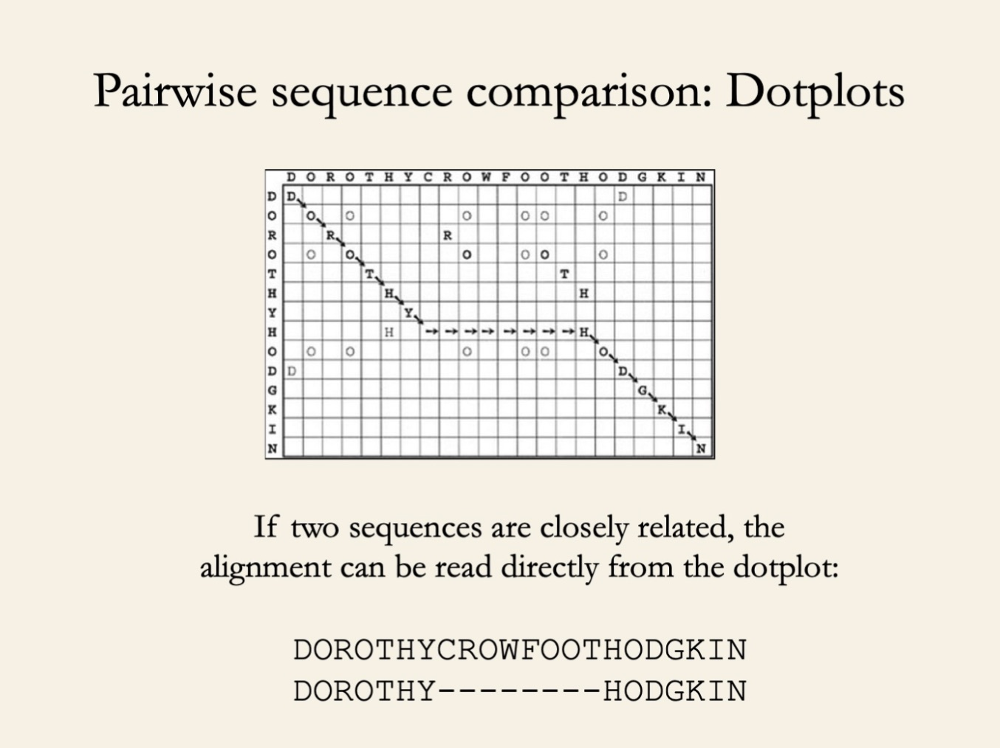
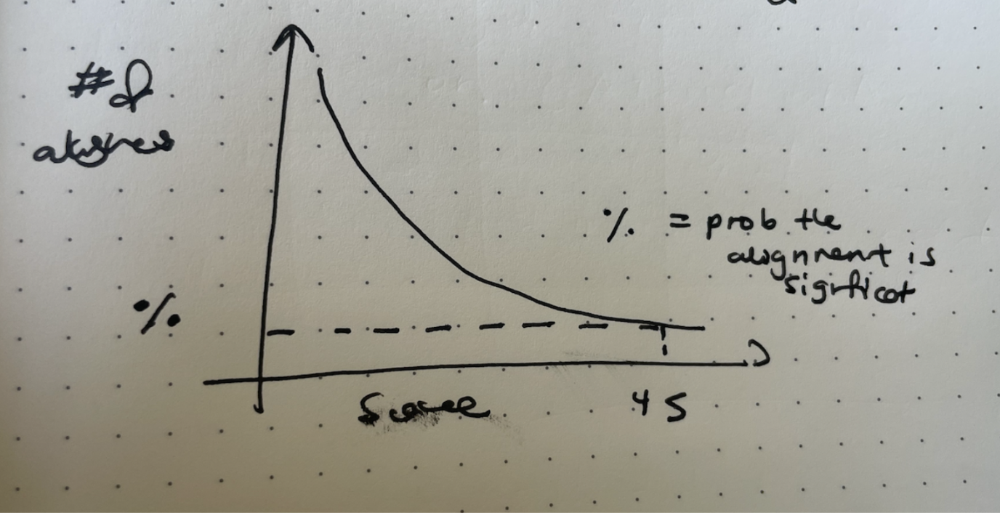
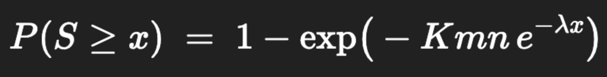
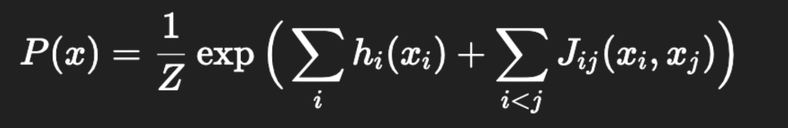

Many Words on Homology
Jan 2026 · 5 min read
My first lab meeting in the Marks Lab opens with Debbie insisting on the proper use of the word “homology”. Homology with respect to what? Common ancestry? Shared function? Structural Similarity?
In this article, I will explore how we attempt to characterise this homology through sequence alignment. At the heart of many bioinformatics algorithms, is the ability to compare 2 sequences. This is necessary, because these databases of sequence information are useless without the ability to “search” within them, occurring when we have a query sequence and want to find other similar sequences.
We often want to do this comparison with many sequences, but the easiest way is to first look at two - with a dotplot.
There is an alignment here. Any path through the dotplot from the upper left to lower right passing through cells in the diagonal indicates a match in the alignment, and otherwise marks a gap in one of the sequences. All paths of this nature are considered alignments, but paths which pass through more filled cells indicate better alignments with more matching residues.
It is terribly inefficient to trace every possible path and score them. So is there a more efficient way to find the optimal path? Sequence alignment algorithms - Needlman-Wunsch and Smith-Waterman - are path-finding algorithms which walk this grid, maximising residue matches and minimising gaps & mismatches.
The simplest part of these algorithms are the matching residues. More complicated are the penalties.
- Gap penalties can either be linear (proportional to the length of the gap) or affine (with a larger G penalty imposed for the initiation of the gap and a smaller d penalty for extending the gap).
- Mismatching residues can be penalised uniformly, i.e. -1 for each mismatch, or according to a substitution matrix. A substitution matrix tells you for example that an X -> X should be penalised less because both these residues are hydrophobic than a Y->X.
The summary of the Needleman-Wunsch algorithm is that you fill out a dot-plot-like-grid, from left to right and top to bottom. To fill each cell, you look up, diagonally left-up, and then left. Each of these cells has its own cumulative score. You sum the score in that cell and the cost of the transition from that cell to you, and pick the highest sum to fill yourself with.

Repeat ad nauseum until you reach the bottom right cell. Then do trace back starting from the bottom-right-most cell, seeing which cell you previously used to replenish yourself with.
The Smith-Waterman algorithm is called a local alignment algorithm because it focuses on identifying local conserved motifs. We will only go into the practical parts of the algorithm here. Repeat the procedure above to fill out the grid, but anytime a cell threatens to be filled with a negative value, placate it with a 0 instead. Instead of starting the traceback from the bottom-right-most cell, start from the cell with the largest value in the grid and continue until a cell with a 0 is reached. You only do this once.
Recall now that these algorithms calculate a similarity score between two sequences. These similarity scores are unlikely to be 0 as most sequences will have some degree of match. So: is this similarity significant or could it have arisen by chance?
The most naive way to calculate this is to take one of the sequences, permute it, and calculate the similarity between both sequences again. Repeat multiple times. If the original similarity score is significantly higher, then this alignment could be considered significant. The distribution ends up looking like this:
But often, we are not just comparing 2 sequences, we are querying big, fat databases. This also does not take into account the size of the databases or the length of the query/database, in which similarities by chance are more likely.
In the 1990s, Karlin and Atschul proved that the distribution of maximum local alignment scores between random sequences follows a Gumbel Extreme Value Distribution (EVD). Maximum, because 2 sequences can have many different alignments, but we only care about the one with the highest score.
Karlin and Atschul recast the parameters of the Gumbel distribution to be λ and K, dependent on the scoring matrices and gap penalties. A 50 from a score using a PAM substitution matrix was different from a 50 using a BLOSUM matrix. I was initially confused why this normalisation mattered, if the scoring & gap schemas within a single search were the same, but it’s apparently for the comparison of hits across different searches.
Then, given this distribution, we ask: What is the probability that an unrelated database sequence would by chance, produce a score as high as an observed one? M and n control for the length of the query and database respectively.
The term E-value is often used to describe BLAST hits. Much like the number of cousins doing better than you, it represents the expected number of alignments with a score >= x that would occur in a database search. The above tail sum gives the probability that one random trial scores >=x. Multiplying that by an approximate total possible number of alignments m x n (the number of random trials), we reach the promised land - an E-value!! Intuitively, alignments that are unlikely to have arisen by chance will have lower E-values.
In the wise words of Arthur M. Leak, “One amino acid sequence plays coy, a pair of homologous sequences whisper; many aligned sequences shout out loud.” These sequence alignment algorithms only work for pairwise comparisons - how do we understand how a group of sequences relates to each other?
This group of sequences is called an MSA - a multiple sequence alignment.

Before protein language models came out of the brush - we had PSSMs, HMMs and Potts models to entertain ourselves with. All these models (including PLMs) attempt to answer the question of: given a new sequence, how consistent is it with the evolutionary constraints captured in the model? We use this as a proxy for: How likely is this sequence to exist in nature, and therefore how good is it (assuming that nature selects for good and useful proteins)?
To quantify this likelihood, we afford these sequences a score. Most old-school methods use MSAs to give them a sense of what a likely sequence looks like.
We begin with Position-Specific Scoring Matrices (PSSMs). The substitution matrices of Dayhoff and the Henikoffs were global matters, arguing that across all positions, a phenylalanine residue was more likely to be substituted for tyrosine than proline. PSSMs improve upon this by arguing that the position at which this substitution occurs matters. Highly conserved regions are less amenable to these substitutions than highly variable ones.
In each column (position) of the MSA, the PSSM counts the frequency of an AA occurring there. Pseudocounts might be added to account for rare amino acids. These frequencies are converted into log odds, by comparing to the baseline frequencies of these amino acids. Finally, the output matrix acts as an averaged, global description of what proteins in the family would look like, allowing for more informative scoring of new sequences.
The PSSM is the foundation of PSI-Blast, an iterative search model used today. Reference the diagram below, but the short story is the first search produces homologous sequences that make up an MSA that produces a PSSM, which captures the conservation pattern in the alignment. (Not so short) This profile is then used in place of the original substitution matrix during the next BLAST, guiding the search towards sequences that match the profile’s conservation patterns. The newly-detected sequences from the second round that exceed the e-value threshold are added to the alignment and the profile is recalculated for future search rounds.
An improvement upon the PSSM was profile Hidden Markov Models (pHMMs). The primary Markov property is that the future state of the system is only dependent on the current state and is independent of all future states. This allows for a dependence between positions of a sequence to be modelled (albeit a slightly myopic and linear one) that PSSMs did not.
The MSA is modelled as a directed acyclic graph, where each sequence-wise position in the alignment has 3 possible states - a match, an insertion and a deletion. The match state has 20 emission probabilities, which model the distribution of an AA residing at that position. The insertion state refers to a situation where the new sequence has more positions than are present in the alignment, and is typically modelled by background frequencies in the alignment. Finally, a deletion refers to when the sequence has less positions than present in the alignment and does not emit any probabilities. These last 2 are especially important because basic PSSMs have no explicit way of modelling indels, we kind of just ignore them.
There are 2 types of probabilities: transition probabilities, the probability of transitioning from a match state in position 1 to an insertion state in position 2, and emission probabilities, the probability of encountering a residue within a given state. The HMM is learnt through maximum likelihood estimation, which refers to the process of estimating parameters of a probability distribution given some observed data. The training objective is minimising the negative log likelihood of a sequence given the model’s parameters (emission and transition probabilities). The hidden part of HMMs refers to which state (M,I, D of column k) the emission is coming from, given that we only see residues of the sequence.
HMMs though can only look at 2 residues in succession at a given time. Potts models allow a little more for long-range dependencies, by looking at couplings (any 2 pairs of given residues) within a sequence, accounting for epistasis.
The basic form of a Potts model is as follows.
The fields are pretty similar to PSSMs, a function that spits out the likelihood of seeing a given AA at a given position. The couplings do the same but for 2 AAs. They say, given 2 AAs at 2 different positions, what is the likelihood of seeing these amino acids? The Potts model draws from a large body of work that says that co-evolutionary mutations in an MSA indicate structural interactions, and it is important therefore that we account for the relationships. If an arginine occurs in Position 2 and a Tyrosine occurs in Position 10 very consistently, the likelihood of a sequence without these amino acids in these positions should be much lower. These models are trained to recapitulate the empirical marginal frequencies of the MSAs.
For example, given an MSA with a length of 2 and only 2 possible AAs.
f1(A) = 0.6
f1(B) = 0.4
f2(A) = 0.5
f2(B) = 0.5
This produces coupled frequencies of:
f1,2(A,A) = 0.3
f1,2(A,B) = 0.3
f1,2(B,A) = 0.2
f1,2(B,B) = 0.2
Finally, DCA is the process of inferring these parameters and they often use the specific technique of estimating pseudolikelihoods to do so(which I don’t yet understand).